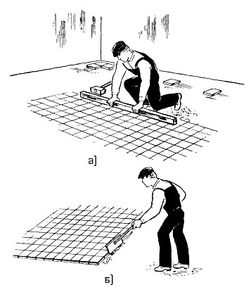

-

8(0152)31-25-61
-

kst@ggkst.by
-

http://ggkst.by
8(0152)31-25-61
kst@ggkst.by
http://ggkst.by
Карта 9: Настилка кислотоупорных полов
Состав технологических операций. Разметка захваток; укладка растворной прослойки; укладка керамических плиток; отделка кислотоупорного покрытия.
Инструменты, приспособления, инвентарь. Лопатки для плиточных работ и растворная; стальные штыри; молоток-кулачок; рейка-правило длиной 1,5 м;
деревянный полутерок длиной 300...800 мм; грабли; стальной скребок; проволочная щетка; рейка Болотина; деревянная киянка или хлопуша. Металлическая рулетка;
складной метр; деревянный угольник; контрольная двухметровая рейка; строительный уровень; ареометр. Влагонепроницаемые наколенники; скамейка плиточника; подножка.
Материалы. Кислотоупорные керамические плитки толщиной 20 мм. Кислотоупорный раствор (на жидком натриевом стекле плотностью 1,38…1,40 г/см3)
с уплотняющими добавками.
Расход материалов из расчета устройства 1 м2 кислотоупорных полов: керамические плитки - 1,03 м2; цементный раствор М150 - 0,021 м3;
битумная мастика - 5,2 кг; кислотоупорный раствор - 0,011 м3; жидкое натриевое стекло - 0,48 кг; цемент М400 - 2 кг; мелкий песок - 0,001 м3.
Схема организации рабочего места (рис. 1). Плитки, подлежащие укладке, раскладывают позади плиточника; раствор доставляют к месту работы в
сменных контейнерах или передвижных ящиках-тележках.
Рис. 1. Схема организации рабочего места при настилке кислотоупорных полов: 1 - покрытие, 2 - правило, 3 - прослойка, 4 - стопки плиток, 5 - причальный шнур, 6 - маячные плитки (направление укладки покрытия показано стрелкой)
Последовательность выполнения технологических операций. Работу начинают после устройства гидроизоляции, очистки и просушки основания,
огрунтовки жидким стеклом плотностью 1,15 г/см3, а также разбивки покрытия и установки маяков.
Разметка захваток. Рейкой Болотина размечают ширину полос-захваток, рассчитанных на 2...3 ряда плиток. С одной стороны захватку ограничивает
стена помещения или уложенный ранее ряд плитки, с другой - причальный шнур, натянутый на уровне покрытия по стальным штырям.
Рис. 2. Укладка растворной прослойки: 1 - правило, 2 - полутерок
Рис. 3. Выравнивание свежеуложенных рядов плиток рейкой (а) и удаление выступающего раствора скребком (б)
Укладка растворной прослойки. Кислотоупорный раствор расстилают лопатой в полосы по огрунтованному основанию, разравнивают граблями, затем рейкой-правилом 1
(рис. 2) и заглаживают деревянным полутерком 2. Толщина прослойки 10…15 мм.
Укладка покрытия. Укладываемые плитки должны быть сухими, очищенными от пыли. Тыльную сторону плиток покрывают тонким слоем кислотоупорного раствора и
укладывают на прослойку точно в заданное положение. Ширину и ровность швов контролируют по причальному шнуру. Сместившиеся плитки необходимо сразу выравнивать
из-за большой вязкости кислотоупорного раствора. После укладки нескольких рядов плиток, но не позднее чем через 20 мин, покрытие выравнивают деревянной рейкой
(рис. 3, а) и киянкой. Закончив укладку ряда на захватке, излишки раствора подрезают и удаляют металлическим скребком (рис. 3, б).
Отделка кислотоупорного покрытия. По истечении четырех суток покрытие протирают 5 %-ным раствором серной, азотной или соляной кислоты
(в зависимости от состава агрессивной среды). Обработку раствором кислоты выполняют дважды с перерывом не менее чем 4 ч. На следующий день пол протирают сухими опилками.
Контроль качества. Швы между плитками шириной не более 2 мм должны быть прямолинейными и тщательно заполненными; просветы между поверхностью пола и
двухметровой контрольной рейкой - не более 4 мм. Уступы между смежными плитками не должны превышать 1 мм. Цвет и рисунок покрытия должны соответствовать проектным.
Трудовые затраты (табл. 1).
Таблица 1.
Нормы времени, чел-ч, на 1 м2: покрытия из керамических плиток (в числителе) и нормы выработки, м2, на 1 чел-дн (в знаменателе)
при устройстве кислотоупорных полов
| Площадь покрытия, м2 | Размеры плиток, мм | ||
| 100×100 | 150×150 | 200×200 | |
| До 2 | 1,2/6,6 | 0,78/10,25 | 0,67/11,94 |
| До 10 | 1/8,0 | 0,68/11,7 | 0,59/13,5 |
| Свыше 10 | 0,95/8,4 | 0,64/12,5 | 0,56/14,3 |
Техника безопасности. Работы по устройству кислотоупорных покрытий выполняют в спецодежде, используя индивидуальные средства защиты.
Очистку свежеуложенных покрытий выполняют 5 %-ным раствором кислоты. При приготовлении раствора кислоту тонкой струей осторожно вливают в воду,
постоянно перемешивая. Концентрированный раствор кислоты в бутылях хранят и переносят в плетеных корзинах; разливают кислоту через воронку.
Работают с кислотой в резиновых перчатках.
При дозировании кремнефтористого натрия для приготовления кислотоупорного раствора работают в плотном комбинезоне, рукавицах и противогазе или респираторе
ШБ-1 «Лепесток». Хранят кремнефтористый натрий в герметичной упаковке.
После работы с кислотой необходимо тщательно вымыть руки с мылом.
Настилают плитки в резиновых перчатках, предварительно протерев руки тальком или меловым порошком.
Контрольные вопросы. Из каких операций складывается устройство кислотоупорных покрытий? Укажите примерную ширину захватки при настилке кислотоупорных полов. Почему кислотоупорные растворы приготовляют непосредственно на месте работ? Почему устройство кислотоупорных покрытий на захватке должно быть закончено в течение 30…40 мин? Перечислите правила техники безопасности при устройстве кислотоупорных покрытий.
Карта 10 — Настилка полов из карт ковровой мозаики